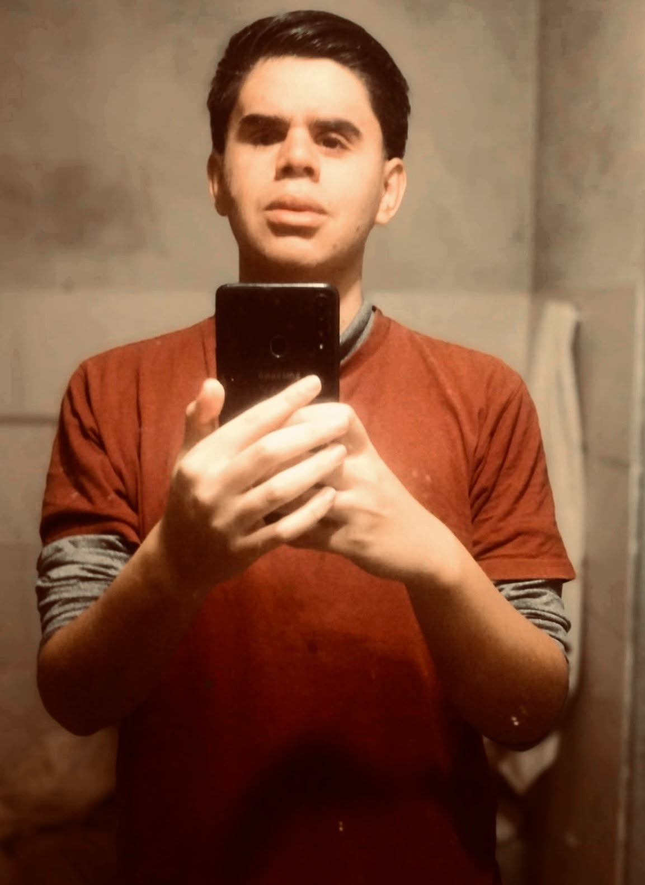
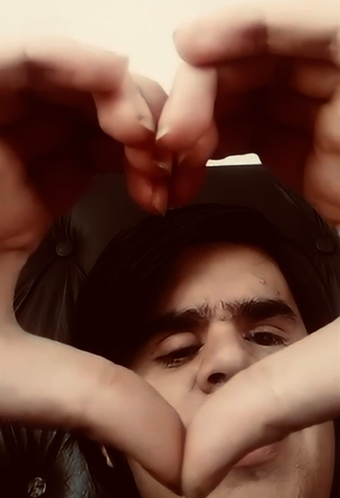
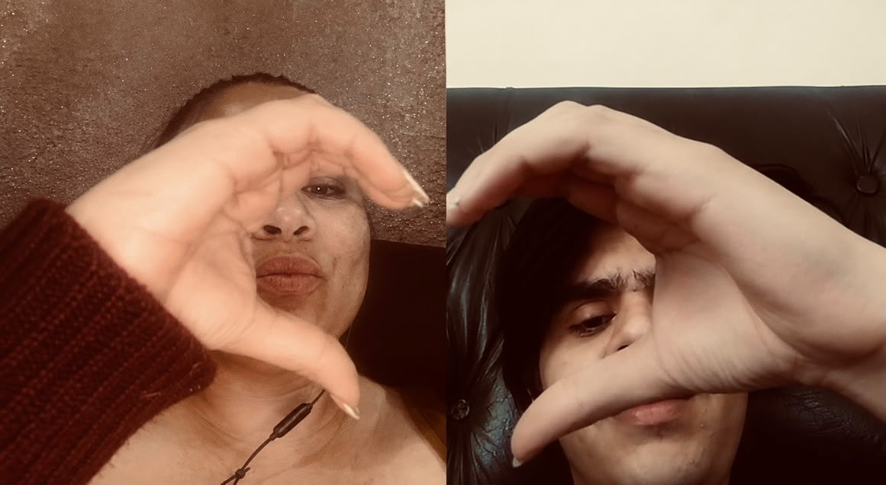
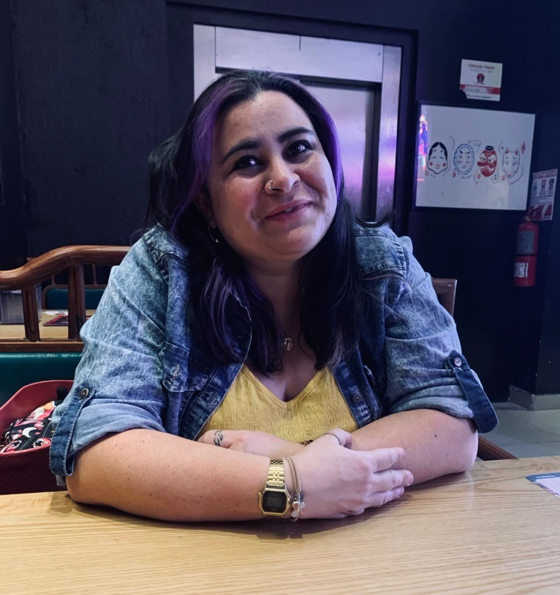
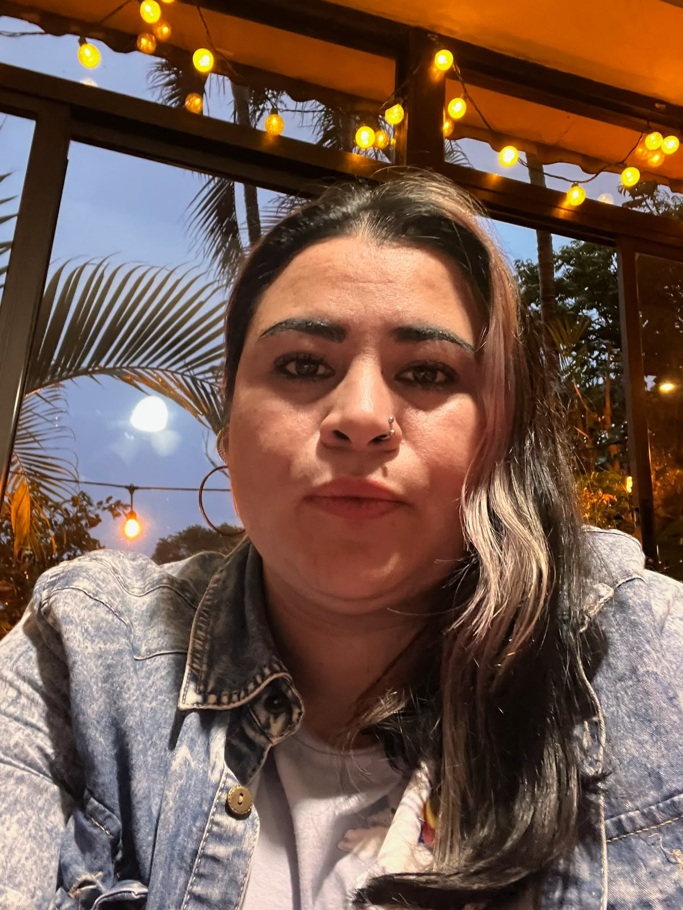
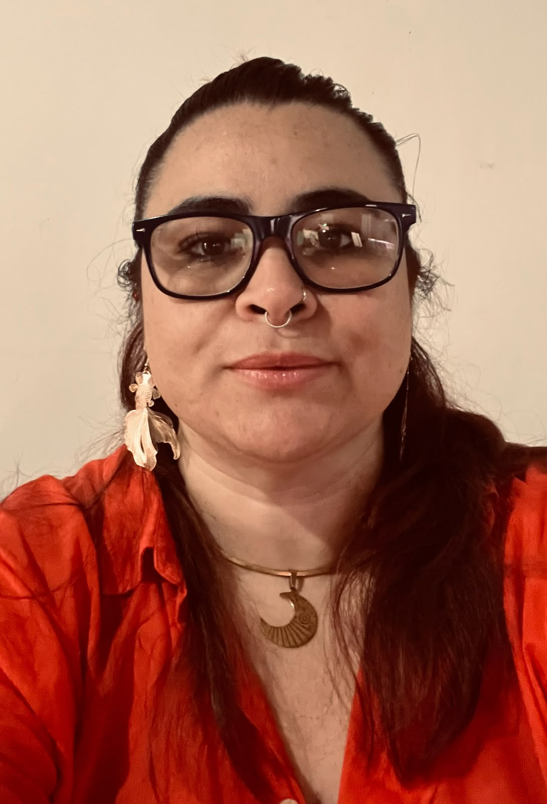
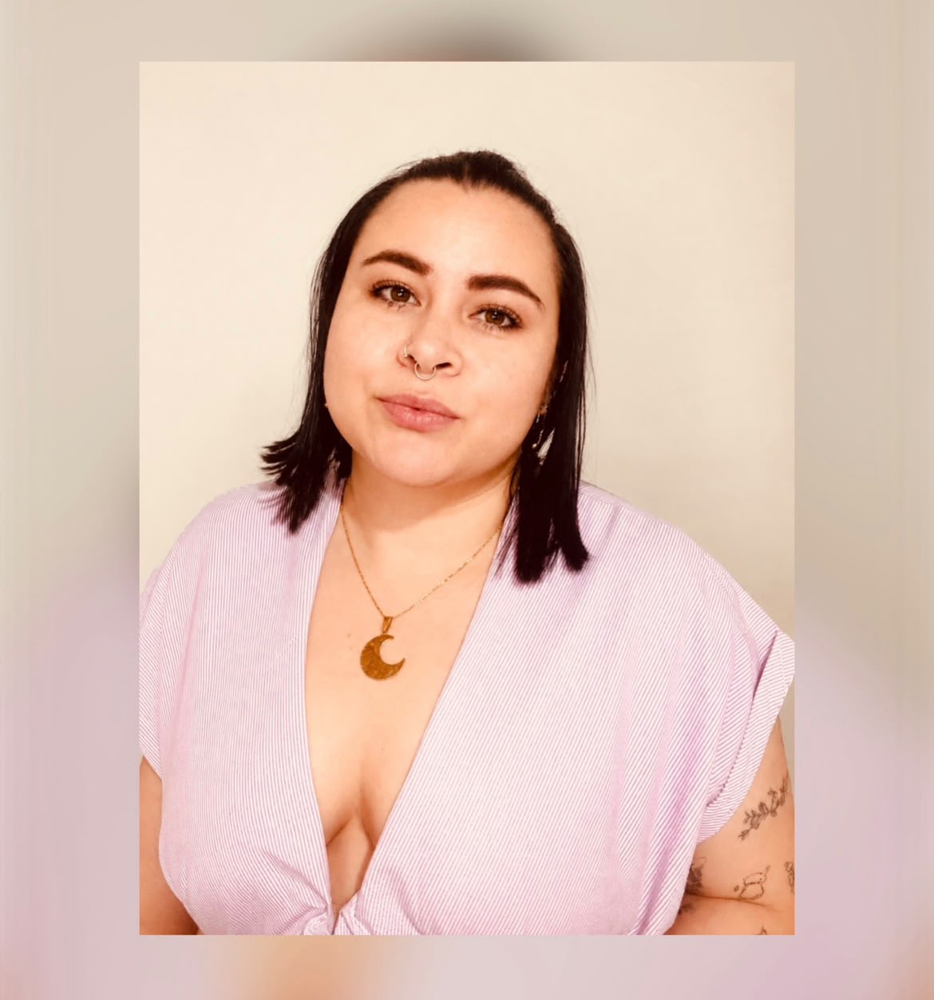

DOS CORAZONES · UNA HISTORIA
Joseline & Rodrigo
Dos países, una historia. Y un amor que sigue acortando kilómetros.
Dale clic al corazón para escuchar nuestra canción
Aunque hoy nos separen kilómetros, hay algo que siempre nos encuentra: nosotros.
Ver nuestros recuerdos ♡El tiempo pasa, y mi lugar sigue siendo con vos.
Calculando nuestra próxima celebración…
Nuestros primeros capítulos
Un pedacito de nosotros, guardado para volver a sonreír cada vez que lo miremos.

♡
♡
♡
♡
♡
♡
♡ ♡
♡
 ♡
♡
Y todavía nos quedan muchísimos recuerdos por crear… ✨
Nuestro próximo encuentro
Seguir eligiéndonos, cuidando este amor y construyendo recuerdos hasta que podamos estar juntos.
La distancia es parte del mapa, no el final del camino.
Argentina viene a Costa Rica, Costa Rica va a Argentina… porque los dos encontramos la forma de acercarnos. ❤️
Hay algo que quiero decirte…
Hay palabras que merecen abrirse despacito.
Mi Amor, mi cielo estos tres meses me han enseñado que incluso a la distancia se puede construir algo bonito. Gracias por ser parte de mis días, por tu forma de estar y por todo lo que todavía nos queda por vivir. Gracias por enseñarme lo que es el verdadero amor, en que cada distancia duele pero aun así este amor sigue siendo mas fuerte que la ausencia. No se que me hiciste pero me encanta estar enamorada de vos, de que seas el amor de mi vida. Espero continuar escribiendo muchísimo más, y créeme que estoy ansiosa por poder abrazarte y besarte, y estar a tu lado al fin amor, sos lo mas bello y maravillso que me ha pasado en la vida. Nuestra próxima misión será ese abrazo y muchísimos besos que tanto esperamos. ❤️
Te amo mi príncipe,
Joss ♡
Y esas pequeñas cosas que nos hacen sonreír
Continuará…
Esta historia todavía tiene muchos capítulos por escribir.
Amoooor, qué bonito es que seas vos. ❤️